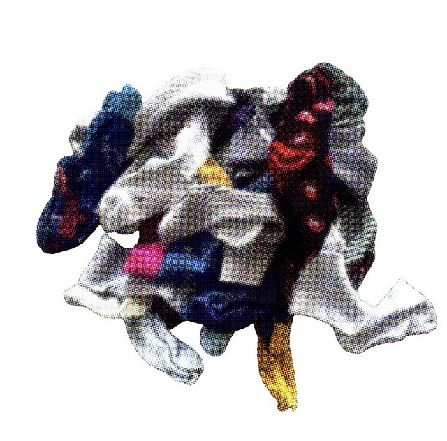
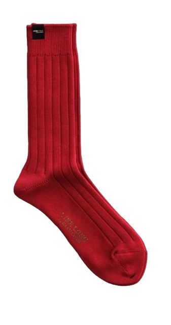
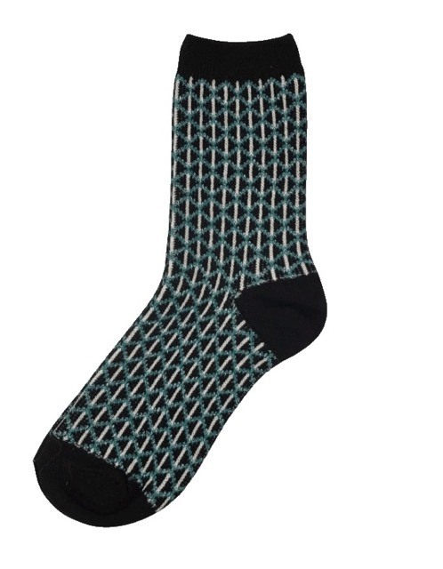
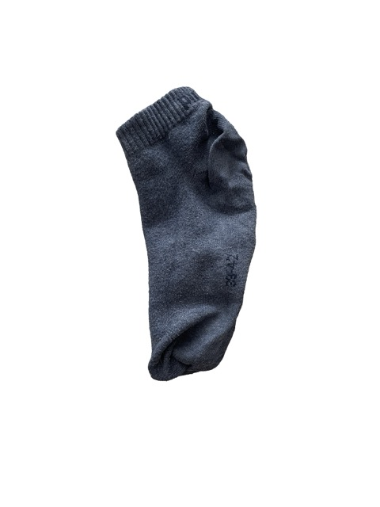
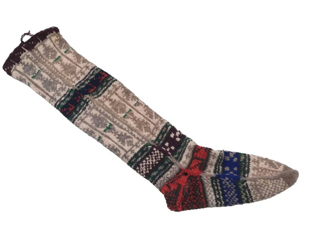
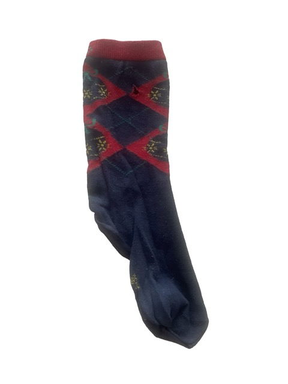
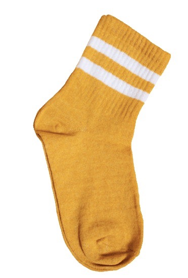
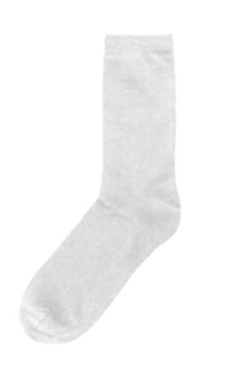
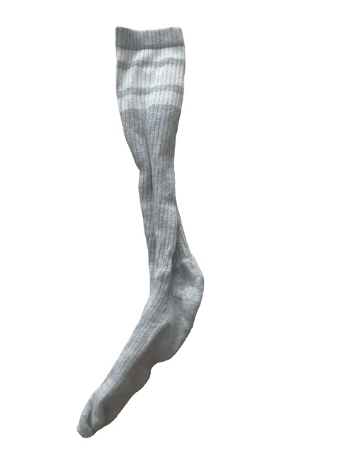
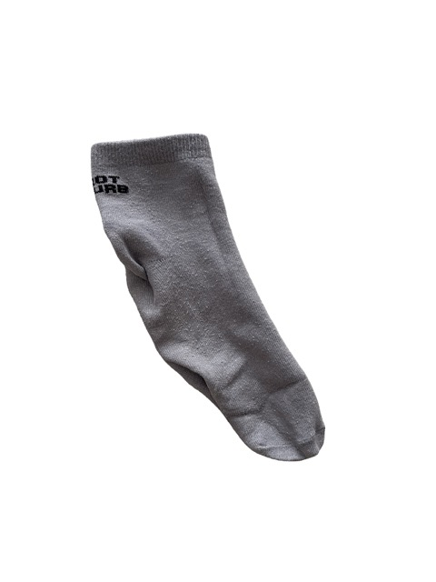

Domestic laundry catastrophe · March 14, 1999 · 17 confirmed missing
The Great Laundry Storm of 1999

| Date | March 14, 1999 |
| Time | 9:47 PM (local) |
| Location | The Basement Laundry Room, 42 Dryer Lane |
| Cause | Class IV Fabric Vortex; overloaded drum dryer |
| Missing | 17 socks confirmed |
| Survivors | Gary, The Silent Sock, Ol' Stretched |
| Inquiry | DTAB Final Report (2001) |
| Memorial | Annual, last Sunday of March |
The Great Laundry Storm of 1999 was one of the most catastrophic domestic textile disasters in recorded sock history, resulting in the confirmed disappearance of seventeen socks during a single spin cycle. The incident occurred during an unusually severe period of static electricity buildup that investigators later described as a "once-in-a-generation atmospheric textile anomaly."[1]
The disaster began when a severely overloaded Whirlpool Model 9000 drum dryer reached critical spin velocity, generating what Laundry Forensics Quarterly would later classify as a Class IV Fabric Vortex. Among the victims were Luna, the veteran sports sock who had survived three previous wash cycles; Tom, formal dress sock and community mediator; and Sockimus Prime, widely regarded as the most experienced sock in the household.[2]
The sole named survivors were Gary, whose testimony became the foundation of the official inquiry; The Silent Sock, found motionless in the drum after the cycle ended and who has not spoken since; and Ol' Stretched, an elderly tube sock discovered behind the dryer drum three days later. Three additional unmatched socks of unknown identity were recovered from the lint trap, their origins never established.[3]
Background
Pre-storm tensions
In the months preceding the disaster, the laundry basket population had reached "unsustainable density." By early March 1999 the basket housed an estimated 34 socks — nearly double the recommended capacity in the Household Textile Safety Guidelines (1997). Relations between the sports sock faction and the formal dress sock community had deteriorated significantly over disputed drawer space.[4]
Tom attempted to broker a Cotton Accord in late February. Negotiations collapsed after Luna refused to acknowledge that wool socks deserved a separate folding shelf. Steve attempted further mediation but was described as "too stretched out to be taken seriously."[5] Jenny and Tiny Terry had separately attempted to escape the basket in the week before the storm; both were returned on March 12th.
The static electricity buildup
Beginning around March 10, witnesses reported abnormally aggressive static electricity throughout the laundry room. The Last Wool Sock claimed to have experienced "persistent crackling" for 72 hours before the storm. The Winter Sock corroborated this, noting visible sparks and filing three informal complaints that went entirely unheeded.[6]
Investigators from the Domestic Textile Anomaly Bureau (DTAB) later concluded that a confluence of low ambient humidity, an uncleaned lint trap, and a non-approved fabric softener sheet had "fundamentally destabilised the electrostatic equilibrium of the entire textile ecosystem."[7]
Events of March 14
The overloading
At approximately 8:30 PM, The Launderer loaded 2.3 times the dryer's safe capacity. Among those loaded were Jonny Jo, Sissy, Marissa Lou, and Laundry Warrior X — the latter protesting vocally throughout the entire warm-up cycle. The Forgotten Runner stood at the drum entrance warning others not to enter until physically loaded at 8:47 PM.[8]
— The Ankle Witness, DTAB oral testimony, 2000
The lint vortex
At 9:47 PM the dryer reached maximum spin velocity. The combination of overloading, static buildup, and the unapproved softener sheet triggered a Class IV Fabric Vortex.[9]
Sockimus Prime — veteran of the Static Electricity Riots of 1993 and the Hot Wash Crisis of 1996 — recognised the vortex immediately and began organising an emergency formation. Old Man Cotton recorded his final words: "Stay together and never let go of your pair." Captain Woolington positioned himself at the rear of the drum in deliberate self-sacrifice. It was not enough.[10]
— Gary, speaking to Sockipedia Radio, 2003
Immediate aftermath
When the cycle concluded at 10:02 PM, 17 socks were unaccounted for. Gary emerged from behind the detergent shelf to find The Silent Sock sitting motionless in the centre of the drum. She has not spoken since.[11] The Last Wool Sock — who had refused to enter the dryer at all — was inexplicably gone by 10:05 PM, representing what Dr. Helga Woolenweave called "the single most troubling data point in the entire inquiry."
Known victims
The following socks were confirmed missing following the incident. Three additional unidentified textile fragments recovered from the lint trap have never been formally attributed.
- Luna – veteran sports sock; last seen near the drum door
- Jenny – ankle sock; had attempted to flee the basket twice before
- Tom – formal dress sock; author of the failed Cotton Accord
- Tiny Terry – youngest casualty; no testimony recorded
- Jonny Jo – sports sock; highest elasticity rating in the load
- Sissy – floral print; reportedly waved from inside the vortex
- Marissa Lou – knee-high; eight years of service
- Steve – neutral tube sock; declared missing 48 hours post-incident
- Captain Woolington – 100% merino wool; self-sacrifice at vortex apex
- Patricia – connected disappearance; the Seafood Restaurant Flood
- The Winter Sock – issued three unheeded warnings before the storm
- The Forgotten Runner – warned others; loaded by force at 8:47 PM
- Old Man Cotton – eldest; sole recorder of Sockimus Prime's final words
- Sockimus Prime – most experienced; led the failed emergency formation
- The Toe Guardian – only victim with zero fibre trace recovery
- The Last Wool Sock – never entered the dryer; still vanished
- Laundry Warrior X – protested continuously; went silent at 9:47 PM exactly
Survivors and testimony

Gary remains the most prominent survivor and the principal source of first-hand testimony. His account was reinstated as primary evidence following the 2001 Sockipedia Commission Review. Gary also testified regarding the Seafood Restaurant Flood, in which his wife Patricia disappeared at Captain Lobster's Seafood Grill.[12]
The Silent Sock was found in the drum at 10:04 PM. She has not spoken since. All motions to launder her have been defeated unanimously at every annual Surviving Sock Support Network (SSSN) meeting since 2001.[13]
Ol' Stretched, the third survivor, declined all requests to testify, reportedly saying only: "I've seen enough."
Investigation and findings
The formal investigation by the Domestic Textile Anomaly Bureau (DTAB) concluded in November 2001. The DTAB Final Report attributed the disaster to human overloading combined with a neglected lint trap and unapproved softener sheet.[14]
A minority dissent by Dr. Helga Woolenweave proposed the disappearances involved a textile dimensional anomaly not yet understood by mainstream laundry science, citing especially The Last Wool Sock who vanished without entering the dryer. This position remains contested.[15]
Legacy
Annual memorial ceremonies are held near the laundry basket on the last Sunday of March. Gary has attended every year since 2000. Sockimus Prime's final words — "Stay together and never let go of your pair" — were adopted as the motto of the International Sock Pairing Foundation.[16]
Tiny Terry's name is read first at each annual memorial. The silence that follows is generally the longest of the ceremony.
Additional Archives

The Winter Sock
The Forgotten Runner
Old Man Cotton
The Silent Sock
Sockimus Prime
The Toe Guardian
The Last Wool Sock
Laundry Warrior XSee also
- Gary (survivor)
- Patricia — Seafood Restaurant Flood
- Captain Woolington
- Old Man Cotton
- The Silent Sock
- Sockimus Prime
- The Last Wool Sock
- Laundry Warrior X
- Class IV Fabric Vortex
- DTAB Final Report (2001)
- Static Electricity Riots of 1993
- Hot Wash Crisis of 1996
References
- Woolenweave, H. & Fibres, J. (2001). DTAB Final Report. pp. 12–17.
- Laundry Forensics Quarterly, Vol. 4 No. 2 (1999). pp. 34–41.
- Basket Census Records, 42 Dryer Lane, March 1999.
- Household Textile Safety Guidelines (1997), §4.2.
- Tom's personal correspondence. Cited in Woolenweave (2001), p. 43.
- The Winter Sock testimony. DTAB oral history archive, 2000.
- Woolenweave (2001), pp. 88–92.
- DTAB evidence file LT-99-03, March 17, 1999.
- Woolenweave (2001), minority dissent, Appendix C.
- Old Man Cotton testimony. Transcribed in Woolenweave (2001), p. 67.
- Gary testimony, DTAB inquiry session 4, October 1999.
- Cross-Incident Textile Inquiry Report (2004). Appendix D.
- SSSN annual meeting minutes, 2001–2023.
- Woolenweave (2001), executive summary, p. 4.
- Woolenweave (2001), minority dissent, pp. 112–119.
- International Sock Pairing Foundation, founding charter (2002).